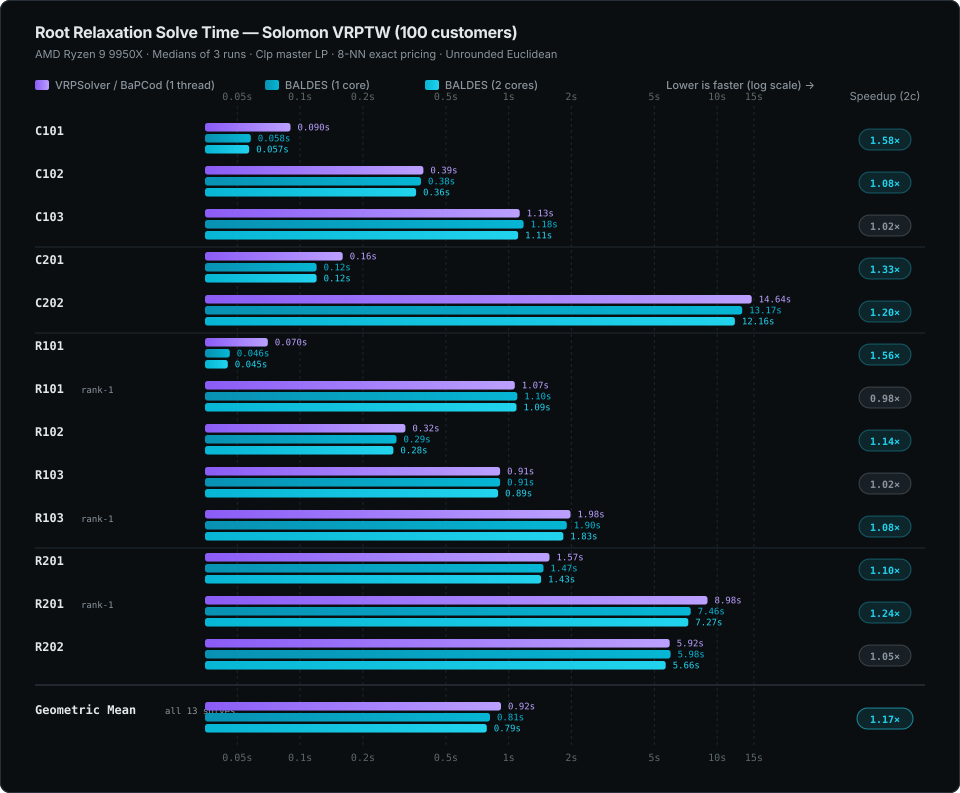

Root benchmarks
Documentation index · Build and validation
Root relaxations of Solomon VRPTW instances (100 customers). Both solvers use the same split-depot graph with unrounded Euclidean distances, the same NG neighbourhoods (the 8 nearest customers), the Clp master and no reduced-cost fixing or enumeration. Times are the solvers' own root timers, medians of three runs, each solver running alone on an AMD Ryzen 9 9950X. The reference run uses one thread; BALDES runs the forward and backward labeling of exact pricing on two threads, so it is timed on one and two cores.

On C101–C103, C201, C202 and R102, rank-one separation finds no violated cut, so those runs equal the ones without cuts.
Original-domain certificate search regression
An October 19, 2026 rerun found a regression introduced with conservative
original-domain certificates in commit 9631e9d. Every exact pricing call could
repeat a bounded search of the same immutable path domain. On C202, temporary
instrumentation measured 90 unsuccessful certificate attempts consuming 13.30 s
of a 26.56 s root solve. The collector scanned the entire graph's arc list at
each DFS frame and polled the clock for every scan.
The collector now builds ordered outgoing arc lists and polls its cooperative deadline in batches of at most 64 work units, with explicit validation and completion checks. A cache scoped to one root/node solve remembers deterministic domain failures at their work, path and storage limits. New duals or cuts cannot complete that same domain within smaller limits. Larger limits may retry; deadline and allocation failures are retried. Child solves start fresh caches. An incomplete search still supplies no certificate.
The same 13 workloads above were run sequentially on the same Ryzen 9 9950X, with Clp, reference-compatible NG size 8, unrounded distances, enumeration disabled, default stabilization, release optimization level 3 and thin LTO. One warm-up precedes three measured runs per workload/core configuration. Two-core medians, in seconds:
| Workload | Regressed build | Fixed build | Original chart |
|---|---|---|---|
| C101 | 0.368 | 0.068 | 0.057 |
| C202 | 25.722 | 12.463 | 12.160 |
| R101 | 0.358 | 0.054 | 0.045 |
| R201, rank-one enabled | 15.597 | 7.987 | 7.270 |
| Geometric mean, all 13 | 2.276 | 0.842 | 0.786 |
This fixes the main regression: the two-core geometric mean improves by 2.70×,
removing about 96% of the added time relative to the rounded chart values.
The fixed build remains about 7% above the chart overall; these measurements
do not establish identical performance to the older binary. Each of the 104
fixed-build runs finishes with root CG status Optimal, and every non-timing
JSON field matches the corresponding pre-fix workload, including full history,
routes, objectives, cuts, iterations and pricing calls.
Local scripts, frozen binaries, source patch, individual outputs, profiles and
validation logs are retained in results/root-speed-fix-20261019/; the pre-fix
suite is in results/root-rerun-20261019/. These are ignored local artifacts.
Numerical and certified bound modes
Normal root and tree solves now default to numerical bounds and skip the full
certificate transaction. --bound-mode certified selects independent bound
validation, attempted at closing pricing passes or when the master objective
suggests the incumbent gap can close. Results label the selected mode and keep
numerical estimates separate from certificates; unsuccessful validation leaves
the certified bound unknown.
An October 19 rerun used the same 13 chart workloads, Clp and two physical cores on the same Ryzen 9 9950X. Trials alternated modes sequentially, with one warm-up and three measured runs per case/mode. The numerical flag was omitted to verify the default. The geometric mean of case medians was 0.834 s in numerical mode and 0.842 s in certified mode. The times are close after the earlier failed-search cache fix; this change primarily makes computation and bound guarantees explicit.
All 104 runs finish with root CG status Optimal. Every JSON field except
timers and bound metadata matches the preceding certificate-cache build,
including LP objectives, full histories, routes, cuts and pricing counts.
All 13 certified-mode workloads retain unknown certified bounds within their
search limits: these times do not measure successful large-instance proofs.
Separate small-instance tests cover successful certification, failure without
numerical fallback, both tree modes, and mode changes through node snapshots.
Raw results, the frozen binary, source patch and scripts are retained locally in
results/bound-modes-20261019/.
HiGHS master reuse
Local measurement on October 19, 2026: AMD Ryzen 9 9950X, Rust 1.97.1, HiGHS 1.15.1, release optimization level 3 and thin LTO. HiGHS uses its default thread settings. Trials run sequentially; these numbers describe this machine and workload, not a general speed guarantee.
A fixed growing-LP workload starts with 120 unit-cover rows and singleton
columns, then inserts 30 batches of 30 three-row columns. It compares persistent
HiGHS state with explicitly discarding the HiGHS cache before each batch. Both
modes retain the same canonical model and receive the same columns. The timer
covers batch construction, insertion, and solving. Five alternating pairs follow
one untimed warm-up per mode. All 150 compared objectives agree within 1e-7.
| Fixed LP workload | Median time |
|---|---|
| Forced cold rebuild | 110.2 ms |
| Persistent model and basis | 63.1 ms |
This workload is 1.75× faster with reuse. Regression tests also verify zero simplex pivots for an unchanged LP, installation of the parent basis in an independent fork, and agreement with cold solves after edits and cleanup.
End-to-end CLI comparisons use the pre-optimization release binary and the
optimized release binary, each with --master highs --rank1 --no-enumeration --time 15, default stabilization, and five alternating pairs per customer
count. The table reports median process wall time:
| Root workload | Before | After | Speedup |
|---|---|---|---|
| R101, 10 customers | 34.0 ms | 27.3 ms | 1.25× |
| R101, 25 customers | 27.0 ms | 11.4 ms | 2.36× |
| R101, 50 customers | 464.1 ms | 276.2 ms | 1.68× |
All runs finish with root CG status Optimal, and paired LP objectives agree
within 1e-7. Warm bases change duals and pricing trajectories, so these root
speedups include changes in pricing work and are not isolated LP timings.
They do not establish integer routing optimality or full solver parity.
Reproducible benchmark source, raw timings, and frozen binaries are kept outside
the repository in the local ../baldes-verification/benchmarks/highs-warm-start/
workbench. The production repository contains only these measurement notes.
HiGHS simplex direction
A second October 19, 2026 measurement on the same machine and HiGHS 1.15.1
compares the persistent master with HiGHS's default dual simplex strategy (1)
and adaptive simplex selection (0). The adapter now selects 0: new columns
preserve primal feasibility while cuts and bound changes can instead favor dual
simplex. Both modes retain the native model and basis, use the same 1e-7
primal/dual tolerances, and retain the single cold restart on a numerical failure.
Scaling, pivot pricing, factorization-update limits and column bounds are unchanged.
Eleven configurations were screened on R201/100, including forced primal, Devex/Dantzig/steepest-edge pricing, scaling disabled, and shorter factorization update limits. Adaptive selection provided the measured improvement without forcing primal simplex for cut and branch edits. Forced dual Devex and Dantzig were slower; the tested scaling/update-limit changes did not improve this case.
Three alternating, sequential before/after pairs per workload used one frozen release executable and a native option/profiling shim. No builds ran during the measurements. Times below are median process wall times; iterations are outer column-generation master solves, distinct from simplex pivots.
| Root workload | Dual time | Adaptive time | Dual CG iterations | Adaptive CG iterations |
|---|---|---|---|---|
| R201, 100 customers | 5.812 s | 3.504 s | 477 | 356 |
| R101, 50 customers | 0.283 s | 0.288 s | 33 | 31 |
| R101, 50 customers, rank-one enabled | 0.285 s | 0.284 s | 33 | 31 |
| R101, 10 customers, rank-one enabled | 0.029 s | 0.027 s | 14 | 14 |
| C101, 100 customers | 0.421 s | 0.367 s | 96 | 35 |
All 30 valid runs finish with CG status Optimal, and paired root LP objectives
agree within 1e-7. R201 simplex pivots fall from 36,816 to 21,953 and measured
native LP time from 2.905 s to 1.188 s; the numerical restart count falls from
one to zero. These are workload-specific measurements of root LP optimization,
not integer routing optimality or a guarantee of identical Clp/HiGHS trajectories.
An attempted RC201 workload was excluded because its input file is absent.
Raw commands, timings, counters, option shim and frozen executable are retained
in ../baldes-verification/benchmarks/highs-tuning-20261019/.